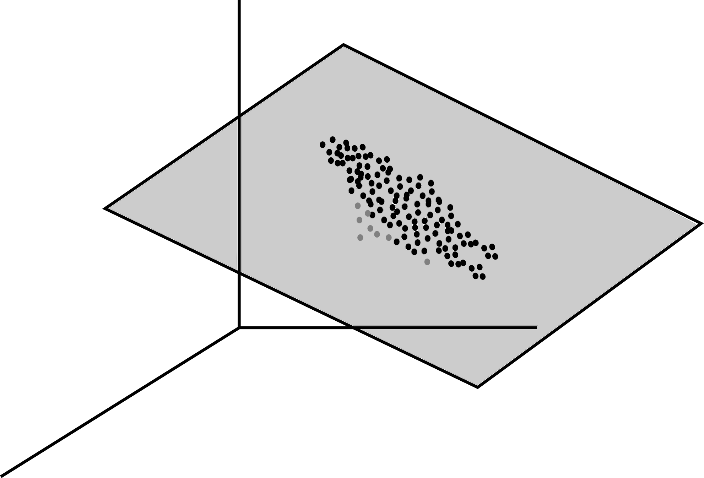
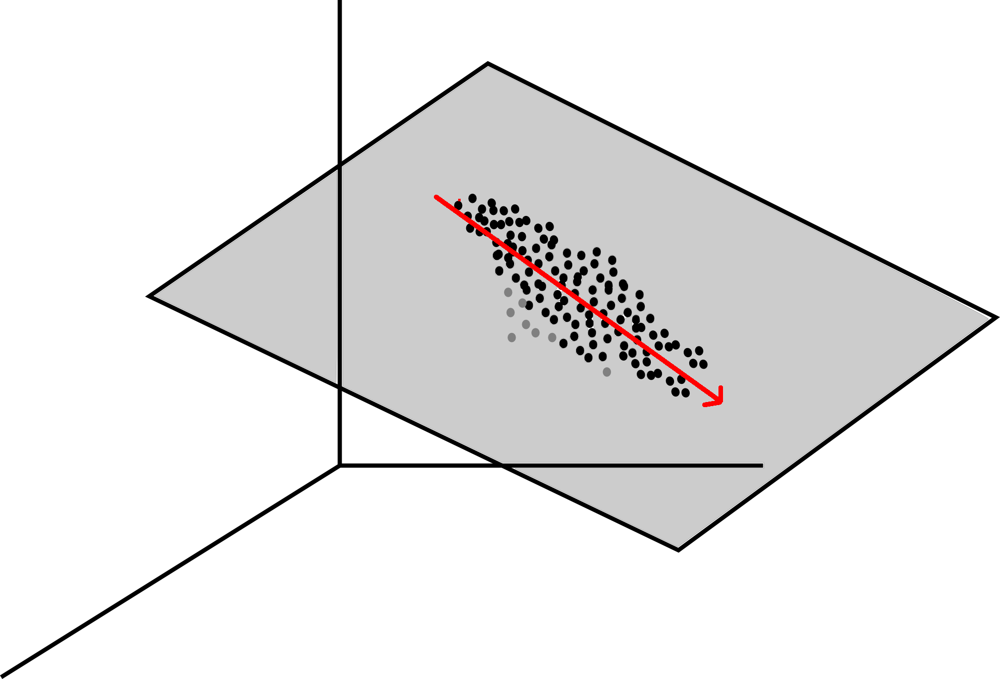

22. Principal component analysis#
High-dimensional data often has low-dimensional structure. For example, when working with \(p\) predictors, even though the data “lives” in \(\mathbb{R}^p\), most of the “action” often occurs in a low-dimensional subspace of \(\mathbb{R}^p\).
{kind=link}

In this chapter, we will see how Principal Component Analysis (PCA) can be used to discover such structure in data.
22.1. The direction having most variance#
Let \(X \in \mathbb{R}^{n \times p}\) be a feature matrix whose rows consist of \(n\) observations \(x_1, \dots, x_n\) in \(\mathbb{R}^p\). Assume data is centered so that each column of \(X\) has mean zero, i.e.,
We would like to find a direction (i.e., a vector in \(\mathbb{R}^p\)) with the property that the data varies as much as possible in that direction. For example, in the above figure, we observe that the data approximately forms an ellipse inside a \(2\)-dimensional plane. The direction with the most variance would be a vector pointing in the direction of the big axis of the ellipse (indicated in red on the figure below).
{kind=link}

When projecting all the data onto the line spanned by that vector, the projected data displays a lot of variation. The idea of PCA is to look for such directions where the projected data has a lot of variability. To formalize this idea rigorously, recall that the variance of a random variance is given by
Thus, when \(E(Y) = 0\), the variance of \(Y\) is equal to \(E(Y^2)\). Similarly, for a vector \(v \in \mathbb{R}^n\) whose entries have mean \(0\), the quantity \(\sum_{i=1}^n v_i^2\) can be seen as measuring the variability of \(v\).
To find a first direction where the data has a lot of variability, we look for a linear combination of the predictors \(w_1 X_1 + w_2 X_2 + \dots + w_p X_p\) with maximal variance. Observe that rescaling \(w\) rescales the variability of the linear combination. To make the problem well-defined, we can assume \(\|w\|_2 = 1\). Now, the vector \(Xw\) contains the entries of \(w_1 X_1 + w_2 X_2 + \dots + w_p X_p\). Observe that the \(i\)-th entry is equal to \(x_i^T w\), where \(x_i\) is the \(i\)-th row of \(X\). Thus, the a natural measure of the variability of \(Xw\) is given by
In order to find the combination with the most variability, we solve
Equivalently, since
the problem is equivalent to
We will show below that the solution of this problem is an eigenvector associated to the largest eigenvalue of \(X^TX\).
22.2. Rayleigh quotients#
First, recall the following result from linear algebra.
Theorem.
Let \(A \in \mathbb{R}^{p \times p}\) be a symmetric matrix, i.e., \(A = A^T\). Then
The eigenvalues of \(A\) are real.
The space \(\mathbb{R}^p\) admits an orthonormal basis consisting of eigenvectors of \(A\).
(Diagonalization of symmetric matrices) Let \(\lambda_1 \geq \lambda_2 \geq \dots \geq \lambda_p\) denote the eigenvalues of \(A\) and let \(v_1, v_2, \dots, v_p\) be an associated orthonormal basis of \(\mathbb{R}^p\) consisting of eigenvectors of \(A\). If \(D = \textrm{diag}(\lambda_1, \dots, \lambda_p)\) is the diagonal matrix containing the eigenvalues of \(A\) on its diagonal and \(U\) is the matrix whose columns are \(v_1, v_2, \dots, v_p\), then
The above is called the eigen decomposition of \(A\).
The Rayleigh quotient associated to a symmetric matrix \(A \in \mathbb{R}^{p \times p}\) is
Interestingly, the Rayleigh quotient can be used to recover all the eigenvalues of the matrix \(A\).
Theorem.
Let \(A \in \mathbb{R}^{p \times p}\) be a symmetric matrix with eigenvalues \(\lambda_1 \geq \lambda_2 \geq \dots \geq \lambda_p\). Then
Moreover, the maximum is achived at the eigenvector \(v_1\) corresponding to \(\lambda_1\).
Proof.
First observe that
where \(\|y\| = 1\). Thus,
Next, let \(v_1\) be an eigenvector associated to \(\lambda_1\), i.e., \(A v_1 = \lambda_1 v_1\). Then
Thus,
Conversely, let \(v_1, v_2, \dots, v_p\) be a basis of \(\mathbb{R}^p\) consisting of eigenvectors of \(A\). Observe that
Now, for \(x \in \mathbb{R}^p\), we have
for some \(x_1, x_2, \dots, x_p \in \mathbb{R}\). Thus,
Since \(A v_i = \lambda_i v_i\) and the \(v_i\)s are orthonormal, we obtain
Similarly,
It follows that
Since \(\lambda_i \leq \lambda_1\) for all \(1 \leq i \leq p\), we obtain
We therefore conclude that
Using a similar approach, if we maximize the Rayleigh quotient on the orthogonal complement the span of the eigenvectors corresponding to the largest \(k-1\) eigenvalues, then we obtain \(\lambda_{k}\).
Theorem.
Let \(A \in \mathbb{R}^{p \times p}\) be a symmetric matrix with eigenvalues \(\lambda_1 \geq \lambda_2 \geq \dots \geq \lambda_p\) and associated eigenvectors \(v_1, v_2, \dots, v_p \in \mathbb{R}^p\). Then for any \(0 \leq k \leq p-1\),
Moreover, the maximum is achived at the eigenvector \(v_k\).
22.3. Back to PCA#
Returning to our PCA problem, recall that the first direction with the most variance is
Observe that \(X^TX\) is a symmetric matrix and therefore has real eigenvalues. Moreover, the space \(\mathbb{R}^p\) admits a basis consisting of eigenvectors of \(X^TX\). Using the above results on Rayleigh quotients, we conclude that \(w^*\) is a normalized eigenvector associated to the largest eigenvalue of \(X^TX\). We let \(w^{(1)} := w^*\) and call the linear combination
of the predictors the first princicipal component. It is the linear combination that has the “most variance”. To find the second principal component, we look for a direction orthogonal to \(w^{(1)}\) that has maximal variance. In other words, we solve
Using again the properties of the Rayleigh quotient, we obtain that \(w^{(2)}\) is an eigenvector associated to the second largest eigenvalue of \(X^TX\).
Continuing in the same manner, having already constructed \(w^{(1)}, \dots, w^{(k)}\), we define
and \(w^{(k+1)}\) is an eigenvector associated to the \((k+1)\)-th largest eigenvalue of \(X^TX\).
In summary, let
be the eigen decomposition of \(X^TX\), i.e., \(D\) is a diagonal matrix containing the eigenvalues \(\lambda_1 \geq \lambda_2 \geq \dots \geq \lambda_p\) of \(X^TX\) on its diagonal, and \(U\) is a matrix whose columns \(v_1, v_2, \dots, v_p\) are orthogonal eigenvectors of \(X^TX\). Observe that the \(k\)-th column of \(XU\) is the linear combination of the columns of \(X\) whose coefficients are \(v_k\). Thus, the \(k\)-th column of \(XU\) contains the \(k\)-th principal components of \(X\). Moreover, the variance of the \(k\)-th principal component is
Let us summarize the above as a theorem.
Theorem.
Let \(X \in \mathbb{R}^{n \times p}\) and let \(X^TX = UDU^T\) be the eigen decomposition of \(X^TX\), where \(D = \textrm{diag}(\lambda_1, \dots, \lambda_p)\) and \(\lambda_1 \geq \dots \geq \lambda_p\) are the eigenvalues of \(X^TX\). Then the \(k\)-th column of \(XU\) contains the \(k\)-th principal component of \(X\). Moreover, the variance of the \(k\)-th principal component is \(\lambda_k\).
Finally, we say that the first \(k\) principal components of \(X\) explain
percent of the variance of \(X\).
22.4. Using principal components#
In practice, we use principal components as follows: given an acceptable percentage \(s\) of explained variance (e.g., \(s = 90\%\)),
Compute the first \(k\) principal components explaining at least \(s\) percent of the variance of \(X\).
Replace the features of \(X\) by the first \(k\) principal components, i.e., replace \(X\) by the first \(k\) columns of \(XU\), where \(X^TX = UDU^T\) is the eigen decomposition of \(X^TX\) as above.
In practice, it often happens that a small number \(k\) of principal components explain a large fraction of the variance of a dataset with \(p\) features. As a result of replacing the features by the \(k\) first principal components, the new dataset now has only \(k\) variables, with \(k\) much smaller than \(p\). Effectively, this reduces the number of variables of the problem from \(p\) to \(k\). Assuming the percentage of explained variance of the first \(k\) principal components is large enough, the resulting dataset still captures the original one well. Applying machine learning algorithms on the smaller dataset can yield a significant improvement in performance since the dimension of the problem is much smaller and the sample size remains the same.